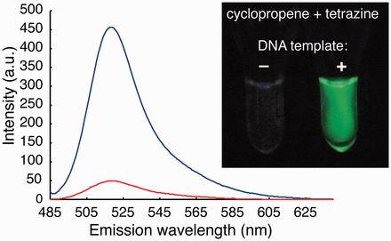
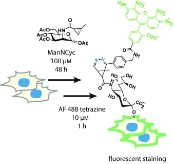
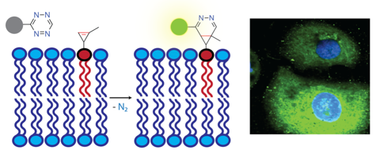
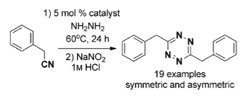
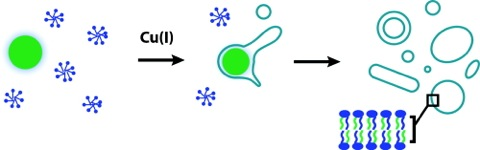
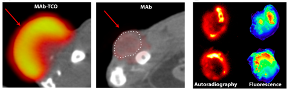

Recent Research Results
Rapid Oligonucleotide-Templated Fluorogenic Tetrazine Ligations

Template driven ligation of fluorogenic probes presents a powerful method for DNA and RNA detection and imaging, with advantages over aptamer and beacon based approaches. We report DNA probes with quenched fluorophore tetrazine and cyclopropene probes that rapidly react by bioorthogonal cycloaddition upon hybridization. We demonstrate discrimination of single template mismatches in buffer and cell media. Fluorogenic bioorthogonal ligations offer a promising route towards the robust detection of DNA or RNA sequences. - Nucleic Acids Res., 2013, ASAP
Fluorescent Live-Cell Imaging of Metabolically Incorporated Unnatural Cyclopropene-Mannosamine Derivatives

Sugar coated: We recently developed methylcyclopropenes as low-molecular-weight tetrazine coupling partners. Here, we demonstrate that methylcyclopropenes can meet the stringent steric demands required for metabolic imaging of unnatural mannosamines on live cells. Using sequential azide--alkyne chemistry, we also demonstrate multicolor imaging of two different metabolically incorporated unnatural sugars - ChemBioChem, 2013, ASAP
Live-Cell Imaging of Cyclopropene Tags with Fluorogenic Tetrazine Cycloadditions

Spotlight on Lipids: Despite their promise, one of the major limitations of tetrazine bioorthogonal cycloadditions has been the requirement of bulky dienophile reaction partners. We have designed methyl-cyclopropene tags capable of reacting rapidly with tetrazines while maintaining stability in aqueous solution. We demonstrate the suitability of these probes for bioconjugation by imaging cyclopropene modified phospholipids in live human cancer cells -Angew. Chem. Int. Ed., 2012, ASAP
Metal-Catalyzed One-Pot Synthesis of Tetrazines Directly from Aliphatic Nitriles and Hydrazine

Paving the way: The lack of convenient synthetic methods is a significant roadblock to the broader use of 1,2,4,5-tetrazines in bioorthogonal chemistry and functional materials. Lewis acid metal catalysts—most notably divalent nickel and zinc salts— are described to catalyze the one-pot synthesis of 1,2,4,5-tetrazines directly from aliphatic nitriles (see scheme). -Angew. Chem. Int. Ed., 2012, 51(21), 5222-5225.
Membrane Assembly Driven by a Biomimetic Coupling Reaction

One of the major goals of synthetic biology is the development of non-natural cellular systems. In this work we describe a catalytic biomimetic coupling reaction capable of driving the de novo self-assembly of phospholipid membranes. Our system features a copper catalyzed alkyne azide cycloaddition that results in the formation of a triazole containing phospholipid analog. Concomitant assembly of membranes occurs spontaneously, not requiring preexisting membranes to house catalysts or precursors. The substitution of efficient synthetic reactions for key biochemical processes may offer a general route toward synthetic biological systems. -J. Am. Chem. Soc., 2012, 134(2), 751-753
Reactive Polymer Enables Efficient In Vivo Chemistry

There has been intense interest in the development of selective bioorthogonal reactions or “click” chemistry that can proceed in live animals. Until now however, most reactions still require vast surpluses of reactants because of steep temporal and spatial concentration gradients. Using computational modeling and design of pharmacokinetically optimized reactants, we have developed a predictable method for efficient in vivo click reactions. Specifically, we show that polymer modified tetrazines (PMT) are a key enabler for in vivo bioorthogonal chemistry based on the very fast and catalyst-free [4+2] tetrazine/trans-cyclooctene cycloaddition. Using fluorescent PMT for cellular resolution and 18-F labeled PMT for whole animal imaging, we show that cancer cell epitopes can be easily reacted in vivo. - Proc. Nat. Acad. Sci. USA, 2012, ASAP